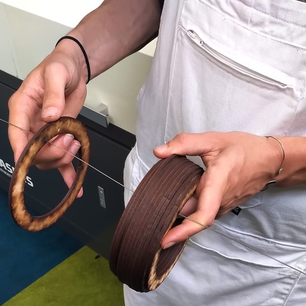

Hi! My name is Daniel Meyer.
This website is my personal blog and a showcase of my creative work - mostly as a game designer/programmer, sometimes as a UX designer, and occasionally as a social designer.
I enjoy creating small, conceptually experimental games, the most recent of which being Acting, Thinking, Feeling: a card game about emotional conflict.
The ideal game for me to work on is, first and foremost, fun. At the same time, it fulfills me most to work on games that use the participative nature of games to offer new insights and perspectives, and maybe brighten someone's day - beyond just providing a welcome distraction from reality.
So, if you happen to be looking for someone to help make your serious game more fun (or maybe your fun game more serious?), let's chat!
In the meantime, feel free to scroll down to learn more about my education, work experience, skills, flaws and all that - or press the button below to check out some of my projects.

last updated on 13 nov 2025
💌 reply to this post
Some summary about my study at HKU.

last updated on 15 nov 2025
💌 reply to this post
In the summer of 2023, I dropped my last proper smartphone into a hot tub - my beloved BlackBerry KEY2. Since then, I've only had old smartphones that I use as glorified MP3 players, along with an old Nokia to call/sms with.
I leave chatting (i.e. Signal/WhatsApp) and answering emails for when I'm behind my laptop. Whenever I'm not, I very much appreciate being unreachable for everything except emergencies and spontaneous plans with friends - hence the Nokia.

last updated on 13 nov 2025
💌 reply to this post
In the second half of 2025, I familiarized myself with Lua's entity-component system by making three mods for Noita. Most of the Lua code I wrote can be found in this Github repo.

last updated on 13 nov 2025
💌 reply to this post
GDScript is the scripting language used in Godot. Like Java and C#, it is an object-oriented language, so it wasn't very difficult to wrap my head around GDScript's syntax and its underlying concepts.
You can see some of the code I wrote in GDScript in this Github repo.

last updated on 13 nov 2025
💌 reply to this post

I've been using Godot since early 2024, starting with the Royal Game of Ur group project. Since then, I've used it to create various prototypes as a "solo dev", including one game jam entry and Acting, Thinking, Feeling.
With its open-source nature, optimized dev/design workflow and practically non-existent loading times, Godot is my personal engine of choice - at least for anything that's not a large 3D project.

last updated on 13 nov 2025
💌 reply to this post
Since learning how to use Unity back in 2019, I've used it for the majority of my (group) projects during my study at HKU.
Notable projects I've worked on using Unity:
While no longer my personal engine of choice, I still work comfortably with Unity.

last updated on 13 nov 2025
💌 reply to this post
Blablabla

last updated on 19 nov 2025
💌 reply to this post
Data sovereignty is very important to me, both on a personal and global level. As such, I aim to exclusively use, produce and support software following the FOSS philosophy, only stepping out to proprietary options when absolutely necessary.
I'd like to one day make a meaningfully open source game. If that happens to be something you'd also like to explore: let's get in touch!

last updated on 13 nov 2025
💌 reply to this post